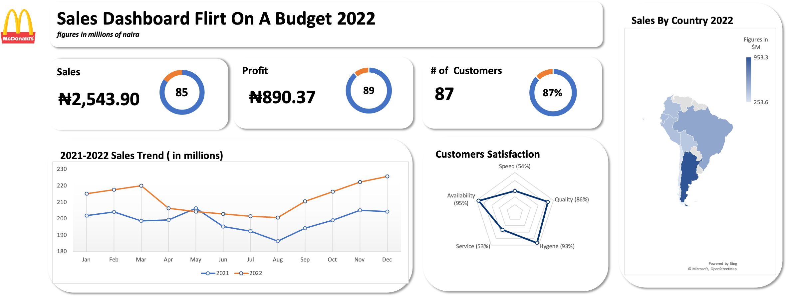
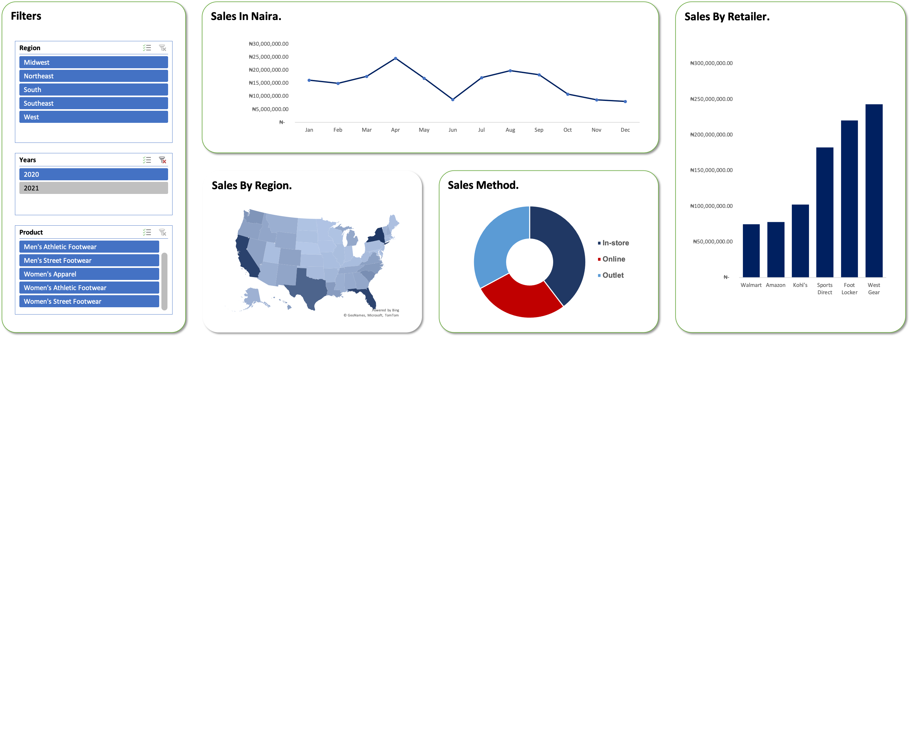
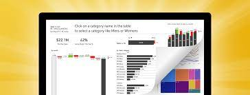

A financial model is a tool used to forecast future performance, typically for a project, investment, or company. It involves creating a mathematical representation of financial statements to analyze the impact of various scenarios and make decisions.

The dashboard is updated in real-time or regularly and displays data in formats like graphs, tables, and charts. Conditional formatting and color-coding can help focus attention on key metrics.

The dashboard can be made with tools like Excel. It typically includes tabs with timelines, Gantt charts, budgets, and risk management metrics.
The project is to help a company which is trying to control attrition. There are two sets of data: "Existing employees" and "Employees who have left". Following attributes are available for every employee; -Satisfaction Level -Last evaluation -Number of projects -Average monthly hours -Time spent at the company -Whether they have had a work accident -Whether they have had a promotion in the last 5 years -Departments (column sales) -Salary
The Northwind Database of a fictitious company which imports and exports specialty foods from around the world.

The sales dashboard created on Excel provide businesses with a clear overview of their sales performance, enabling them to make informed decisions and take proactive steps to improve their sales strategies

Data Analysis about Palmoria Group about sales and business functionality